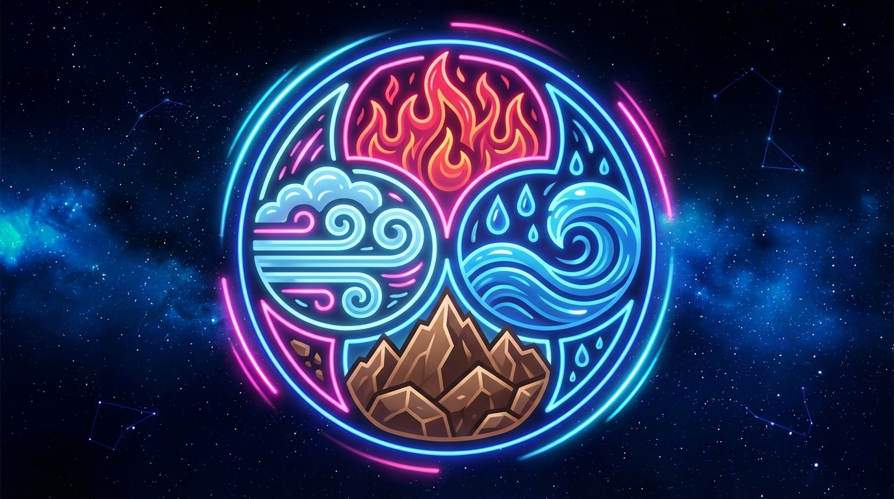

Why Connect MBTI with the 4 Zodiac Elements?
MBTI temperaments and the zodiac’s four elements are both languages for describing human rhythm. This page explains why the two frameworks are often paired and how to read them for insight.
The key is not scientific proof but a symbolic way of reading rhythm—a map for where energy flows easily, where it stalls, and how two styles can translate each other.
What the 4 Elements Mean in Astrology
The elements are shorthand for temperament. Fire signals drive and initiative, Earth is stability and practicality, Air is thought and communication, and Water is emotion and intuition. Grouping signs this way makes their energy easier to read.
Fire: fast decisions, instinctive push, goal focus
Earth: stability, execution, real-world grounding
Air: ideas, logic, conversation
Water: empathy, emotional flow, atmosphere sensing
What MBTI Temperaments Capture
MBTI has 16 types, but four big currents under the surface. NF seeks meaning and values, SJ prefers responsibility and order, NT favors analysis and structure, and SP values freedom and sensory experience. In short, it’s a way to describe behavioral rhythm.
NF: meaning-driven, empathy and ideals
SJ: reliability and structure
NT: strategy and analysis
SP: experience and spontaneity
Why the Connection Works as a Framework
Both systems are trying to describe how people move through the world. One uses celestial symbols, the other uses personality patterns, but the core question is the same: What is your energy rhythm, and how does it meet someone else’s?
This is why the mapping can reveal common misunderstandings. Fast Fire/Air rhythms may decide quickly but process emotions later. Earth/Water rhythms can feel steady but may resist change. The framework helps you name the friction.
How to Use It for Real Insight
1. Summarize both people’s rhythms in one sentence.
2. Translate conflict into “speed, expression, decision style.”
3. Choose a rhythm-matching solution, not a winner.
Reading tip: This doesn’t replace psychology or science. It’s a shared language for understanding patterns, which makes conversations easier and less draining.
Next Step: Read the Compatibility Guide
If you want to see how specific pairings behave, continue here.
MBTI × Zodiac Compatibility: Why Similar Temperaments Click →
← Back to Blog